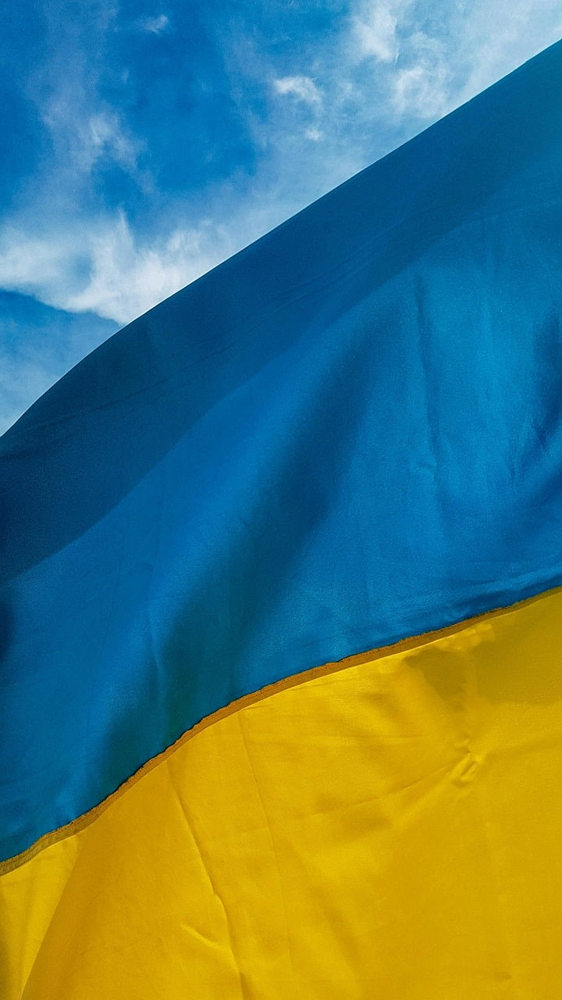

Історія
Україна має глибокі історичні корені, що сягають часів Київської Русі (9–13 ст.), коли територія сучасної України була центром великої середньовічної держави.
Після занепаду Київської Русі на ці землі претендували різні держави: Литва,Польща, Московське царство та інші.
Важливим етапом в історії України стала боротьба за незалежність у 17 ст., яку очолював Богдан Хмельницький.
У 20-му столітті Україна пережила низку потрясінь, включаючи Першу та Другу світові війни, Голодомор 1932-1933 років, репресії за часів СРСР, а також боротьбу за відновлення незалежності. Україна здобула незалежність у 1991 році після розпаду Радянського Союзу, і відтоді будує демократичну державу.
Економіка
Україна має значний сільськогосподарський потенціал завдяки родючим чорноземам, що дозволяють вирощувати великі обсяги зернових, соняшника, овочів та фруктів. Країна є одним із найбільших у світі експортерів пшениці, кукурудзи та соняшникової олії. Важливою галуззю є також важка промисловість, особливо металургія та машинобудування.
Проте економіка України стикається з численними викликами, зокрема пов'язаними з політичною нестабільністю, корупцією та війною на сході країни, що почалася в 2014 році.
Політична ситуація
Політична сцена України є динамічною і складною. Після здобуття незалежності країна пережила кілька політичних криз, найзначнішими з яких були Помаранчева революція 2004 року та Революція Гідності 2014 року. Після Революції Гідності
Україна почала активніше рухатися в бік європейської інтеграції та реформування системи управління, економіки та правової системи.
Важливою проблемою для України є війна з Росією, яка почалася в 2014 році з анексії Криму Росією та бойових дій на Донбасі. У 2022 році Росія розпочала повномасштабне вторгнення в Україну, що стало наймасштабнішим збройним конфліктом у Європі після Другої світової війни.
Культура
Українська культура є багатогранною, з сильними народними традиціями та унікальним мистецьким спадком. Важливим елементом української культури є музика, зокрема народні пісні, які часто супроводжуються грою на бандурі. Література, театр, кіно та образотворче мистецтво також займають важливе місце в культурному житті країни.
Серед видатних українських письменників — Тарас Шевченко, Іван Франко та Леся Українка. У сучасній культурі Україна також відома завдяки кіноіндустрії та мистецтву, яке отримує міжнародне визнання.
